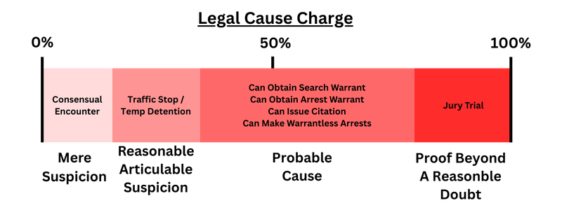

A Tale of Two Officers: How a Simple Mistake Led to a DUI Case Dismissal
Published on
It's a scenario that seems destined for a conviction: police respond to a call about a wrong-way driver and find a person disoriented in their car, facing the wrong direction in a travel lane, who later admits to drinking and refuses roadside sobriety tests. On the surface, it appears to be a "slam dunk DUI case". However, in the American legal system, the process of gathering evidence is just as important as the evidence itself. Our firm, the Law Office of Jeff Lotter, PLLC, recently handled a case that hinged on this very principle, resulting in a complete dismissal of the charges.
This case provides a fascinating look into the legal requirements for police investigations and arrests, specifically the "fellow officer rule" and the standard of "reasonable suspicion."
The Stop vs. The Investigation: Understanding the Legal Thresholds
In any traffic stop, the police must have a valid reason to detain someone. This initial stop requires "reasonable, articulable suspicion" that a crime, traffic violation, or medical emergency has occurred. In our case, with the client parked facing the wrong way in a travel lane, this standard was easily met.
However, to prolong that stop and turn it into a full-blown DUI investigation, the officer needs an additional belief that the person is impaired. The body camera footage showed objective signs of disorientation, satisfying this requirement as well.
The critical issue, however, wasn't the why of the investigation, but the who. Reasonable suspicion must apply to all elements of the crime, and for a DUI, that includes proving who was actually driving the vehicle.

The Fellow Officer Rule: A Bridge of Communication
In many situations, multiple officers are involved. The "fellow officer rule" is a legal doctrine that allows an investigating officer to rely on the knowledge and observations of another officer. As the judge in our case explained, it "create[s] a bridge between the officers" so that one officer can communicate what they observed to another, who can then continue the investigation.
This is where the prosecution's case fell apart.
The first deputy on the scene observed my client in the driver's seat. He then called a specialized DUI officer to take over the investigation. However, during that phone call—and at no point before the DUI investigation began—did the first deputy communicate the single most important fact: that he had seen my client driving or behind the wheel of the car.
The second officer arrived, reviewed the computer-aided dispatch (CAD) notes, and proceeded with his DUI investigation based on his own assumptions. He had an "inkling" the person was impaired, but he had no firsthand knowledge or communicated information that my client was the driver.
The Judge's Ruling: No Bridge, No Case
As the judge correctly identified, the fellow officer rule requires actual communication of the key facts. Without it, there was no "bridge" connecting the first officer's observation of my client driving with the second officer's DUI investigation.
The judge found that because the arresting deputy was never told that the defendant had been seen operating the motor vehicle, he did not have the necessary reasonable suspicion to conduct the DUI investigation. He never saw the defendant behind the wheel himself, and the officer who did see it failed to tell him.
The judge explained, "Had Deputy Geller and Deputy Linton had an opportunity to speak at the scene for just a few moments, it might be a different outcome". But they didn't. That failure to communicate was a fatal flaw in the case. The judge granted our motion to suppress the evidence, leading to a dismissal of the charges.
Visualizing the Case: Understanding the Scene
To better understand the nuances discussed, a video analysis of the bodycam footage or a breakdown of the legal arguments can be very insightful. The video below provides more context on this case.
Video: Case Analysis - The Fellow Officer Rule
Why Experience Matters
This case underscores a fundamental principle of our justice system: law enforcement must follow established legal procedures. When they fail to do so, it can have major consequences.
Defending a DUI or criminal case requires an intricate understanding of these procedures. At the Law Office of Jeff Lotter, PLLC, our approach is built on deep, firsthand experience. Attorney Jeff Lotter spent years as a State Trooper with the Florida Highway Patrol and as a Deputy Sheriff. He is also a current instructor at the Valencia State College Criminal Justice Institute, where he teaches cadets about DUI investigations, traffic stops, and courtroom testimony.
This background provides a unique advantage in spotting procedural errors that other attorneys might miss. If you are facing criminal or traffic charges, you need an attorney who has been on the other side and knows the law inside and out.